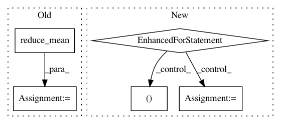

ef234844e1604d5496607fcf48886d9e556c0685,engine/training.py,,run,#Any#Any#Any#Any#,20
Before Change
for reg_loss in reg_losses])
loss = loss + reg_loss
// TODO compute miss for dfferent target types
miss = tf.reduce_mean(tf.cast(
tf.not_equal(tf.argmax(predictions, -1), labels[..., 0]),
dtype=tf.float32))
grads = train_step.compute_gradients(loss)
tower_losses.append(loss)
tower_misses.append(miss)
After Change
if (current_iter % 20) == 0:
writer.add_summary(sess.run(write_summary_op), current_iter)
// Plot reconstructions for the basic autoencoder
for p in range(0,4):
plt.subplot(4, 2, 2*p+1)
temp1 = sess.run(predictions[0])
temp1 = temp1[p,:,12,:,0]
temp1.reshape(24, 24)
plt.imshow(temp1, cmap="gray")
plt.subplot(4, 2, 2*p+2)
temp2 = sess.run(predictions[1])
temp2 = temp2[p, :, 12, :, 0]
temp2.reshape(24, 24)
plt.imshow(temp2, cmap="gray")
plt.pause(0.0001)
if (current_iter % param.save_every_n) == 0 and i > 0:
saver.save(sess, ckpt_name, global_step=current_iter)
print("Iter {} model saved at {}".format(
In pattern: SUPERPATTERN
Frequency: 3
Non-data size: 5
Instances
Project Name: NifTK/NiftyNet
Commit Name: ef234844e1604d5496607fcf48886d9e556c0685
Time: 2017-06-21
Author: r.gray@ucl.ac.uk
File Name: engine/training.py
Class Name:
Method Name: run
Project Name: HyperGAN/HyperGAN
Commit Name: 68729f8b6458c3ae3cc26b895d00d1326e5d1c2d
Time: 2019-11-16
Author: mikkel@255bits.com
File Name: hypergan/trainers/simultaneous_trainer.py
Class Name: SimultaneousTrainer
Method Name: _create
Project Name: HyperGAN/HyperGAN
Commit Name: 594da79c98f360331613f786918f08957c39d13c
Time: 2019-12-05
Author: mikkel@255bits.com
File Name: hypergan/trainers/simultaneous_trainer.py
Class Name: SimultaneousTrainer
Method Name: _create